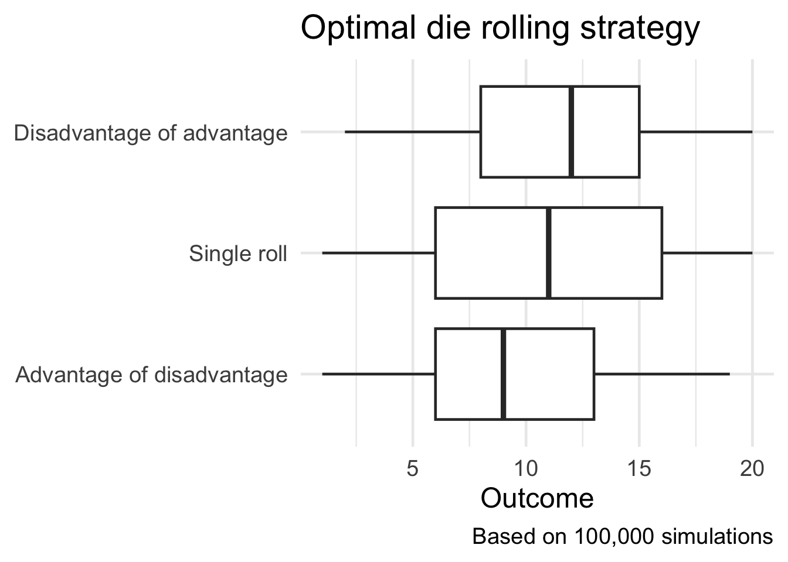
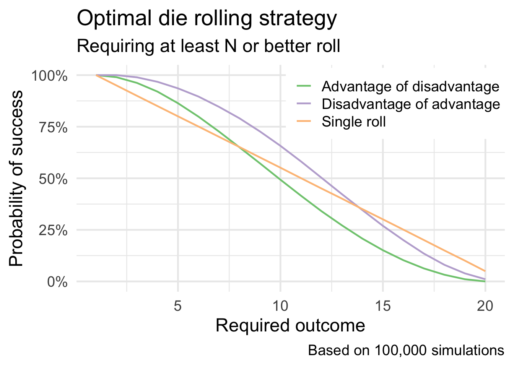

library(tidyverse)
library(glue)
set.seed(123)
theme_set(brand_theme(18))Can You Find The Best Dungeons & Dragons Strategy?
r
riddler
I enjoyed the recent Riddler challenger from May 15th: The fifth edition of Dungeons & Dragons introduced a system of “advantage and disadvantage.” When you roll a die “with advantage,” you roll the die twice and keep the higher result.
NoteCode updated
This post was originally written in 2020 and was last rendered under R 4.0.4. The code has been minimally updated to run under R 4.6.1: purrr::rerun() and purrr::as_vector(), both deprecated in purrr 1.0, were replaced with base equivalents. This was also a performance fix — the deprecation machinery made the 200,000 simulation calls take roughly 11 minutes; the replacement produces identical results in about a second. The analysis and its conclusions are unchanged.
I enjoyed the recent Riddler challenger from May 15th:
The fifth edition of Dungeons & Dragons introduced a system of “advantage and disadvantage.” When you roll a die “with advantage,” you roll the die twice and keep the higher result. Rolling “with disadvantage” is similar, except you keep the lower result instead. The rules further specify that when a player rolls with both advantage and disadvantage, they cancel out, and the player rolls a single die. Yawn!
There are two other, more mathematically interesting ways that advantage and disadvantage could be combined. First, you could have “advantage of disadvantage,” meaning you roll twice with disadvantage and then keep the higher result. Or, you could have “disadvantage of advantage,” meaning you roll twice with advantage and then keep the lower result. With a fair 20-sided die, which situation produces the highest expected roll: advantage of disadvantage, disadvantage of advantage or rolling a single die?
Extra Credit: Instead of maximizing your expected roll, suppose you need to roll N or better with your 20-sided die. For each value of N, is it better to use advantage of disadvantage, disadvantage of advantage or rolling a single die?
To simulate this, I need to write a few functions to sample from a random number generator simulating the die rolls. I’m sure I could have written these more efficiently, but I can take advantage of purrr::map() and basic iterative operations to repeatedly simulate this process.
# constants
n_sides <- 20
n_sim <- 1e05
# advantage function
advantage <- function(n_sides = 20) {
# roll twice, keep the higher value
roll <- sample.int(n = n_sides, size = 2)
roll <- roll[which.max(roll)]
return(roll)
}
# disadvantage function
disadvantage <- function(n_sides = 20) {
# roll twice, keep the lower value
roll <- sample.int(n = n_sides, size = 2)
roll <- roll[which.min(roll)]
return(roll)
}
# advantage of disadvantage function
adv_dis <- function(n_sides = 20) {
# roll twice with disadvantage and then keep the higher result
roll <- c(disadvantage(), disadvantage())
roll <- roll[which.max(roll)]
return(roll)
}
# disadvantage of advantage function
dis_adv <- function(n_sides = 20) {
# roll twice with advantage and then keep the lower result
roll <- c(advantage(), advantage())
roll <- roll[which.min(roll)]
return(roll)
}
# single roll
single_roll <- function(n_sizes = 20) {
# roll the N-sided die once
sample.int(n = n_sides, size = 1)
}From here, it’s simply a matter of testing each strategy lots of times and averaging over the resulting outcomes.
# simulate a bunch of rolls
rolls <- tibble(
.id = 1:n_sim
) %>%
mutate(`Advantage of disadvantage` = map_dbl(.id, adv_dis),
`Disadvantage of advantage` = map_dbl(.id, dis_adv),
`Single roll` = map_dbl(.id, single_roll)) %>%
# collect outcomes into a tidy format
pivot_longer(cols = -.id, names_to = "type_roll", values_to = "outcome")# expected value of each method
rolls %>%
group_by(type_roll) %>%
summarize(exp_val = mean(outcome)) %>%
knitr::kable(col.names = c("Strategy", "Expected value"))| Strategy | Expected value |
|---|---|
| Advantage of disadvantage | 9.573 |
| Disadvantage of advantage | 11.398 |
| Single roll | 10.512 |
ggplot(data = rolls, mapping = aes(x = fct_reorder(type_roll, outcome), y = outcome)) +
geom_boxplot() +
coord_flip() +
labs(
title = "Optimal die rolling strategy",
caption = glue("Based on {scales::comma(n_sim)} simulations"),
x = NULL,
y = "Outcome"
)
It turns out the optimal strategy is disadvantage of advantage!
As for the extra credit challenge, rather than averaging over all the outcomes I need to check for each possible value for \(N\) whether the roll would have been successful or not.
# which is optimal method for needing to roll N or better
n_better <- function(req_out = 10, rolls_df) {
rolls_df %>%
mutate(success = outcome >= req_out)
}
rolls_by_n <- tibble(
n = 1:20
) %>%
mutate(results = map(n, n_better, rolls_df = rolls)) %>%
unnest(cols = c(results)) %>%
group_by(n, type_roll) %>%
summarize(success = mean(success))`summarise()` has regrouped the output.
ℹ Summaries were computed grouped by n and type_roll.
ℹ Output is grouped by n.
ℹ Use `summarise(.groups = "drop_last")` to silence this message.
ℹ Use `summarise(.by = c(n, type_roll))` for per-operation grouping
(`?dplyr::dplyr_by`) instead.ggplot(
data = rolls_by_n,
mapping = aes(x = n, y = success, color = type_roll)
) +
geom_line() +
scale_y_continuous(labels = scales::percent) +
scale_color_brewer(type = "qual") +
labs(
title = "Optimal die rolling strategy",
subtitle = "Requiring at least N or better roll",
caption = glue("Based on {scales::comma(n_sim)} simulations"),
x = "Required outcome",
y = "Probability of success",
color = NULL
) +
theme(
legend.position = c(.75, .83),
legend.background = element_rect(fill = "white", size = 0)
)Warning: The `size` argument of `element_rect()` is deprecated as of ggplot2 3.4.0.
ℹ Please use the `linewidth` argument instead.
Initially, advantage of disadvantage is the preferred strategy until \(N > 14\), at which point the single roll strategy is optimal.